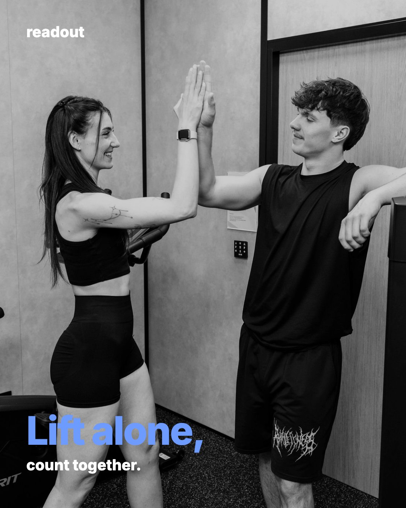
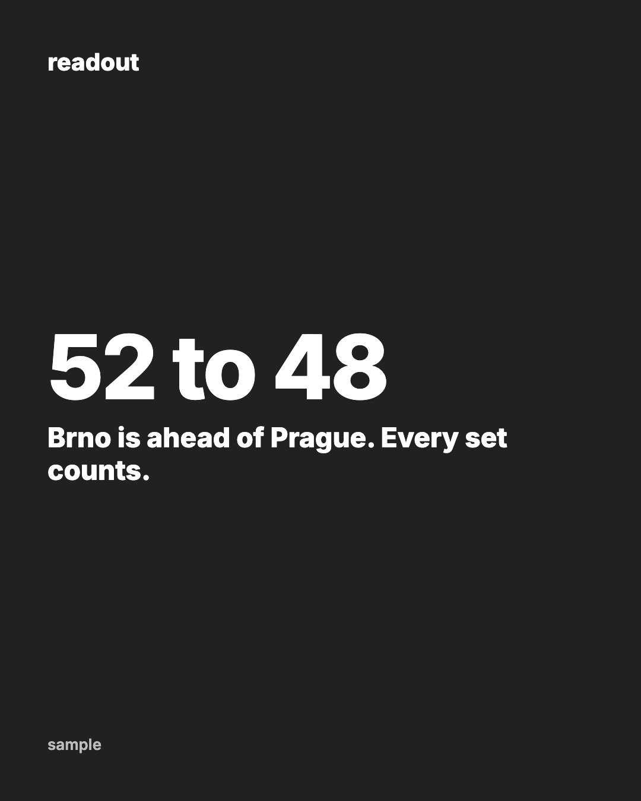
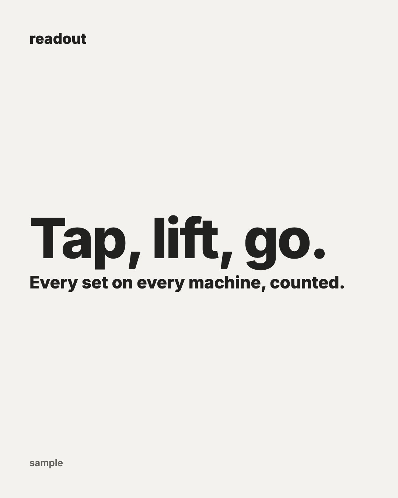
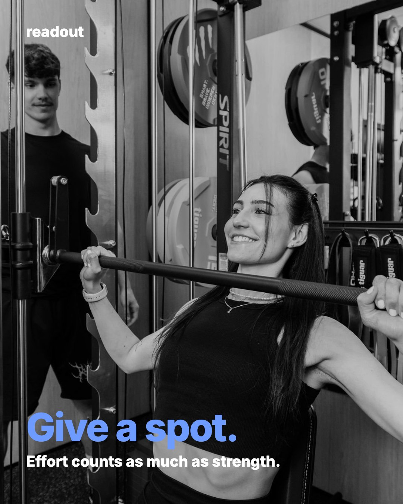
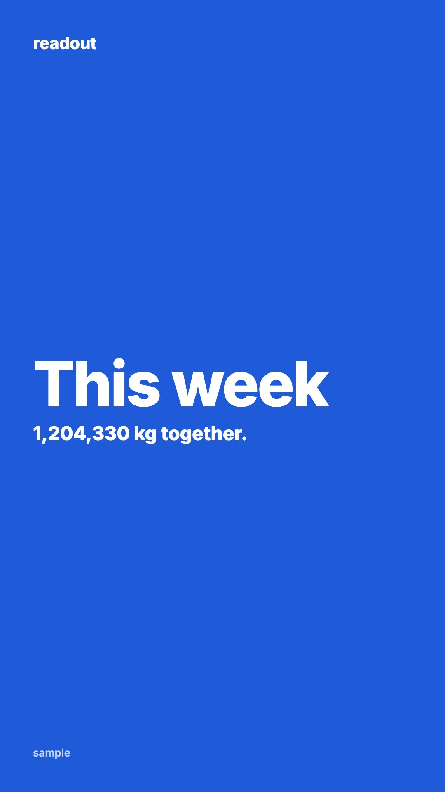
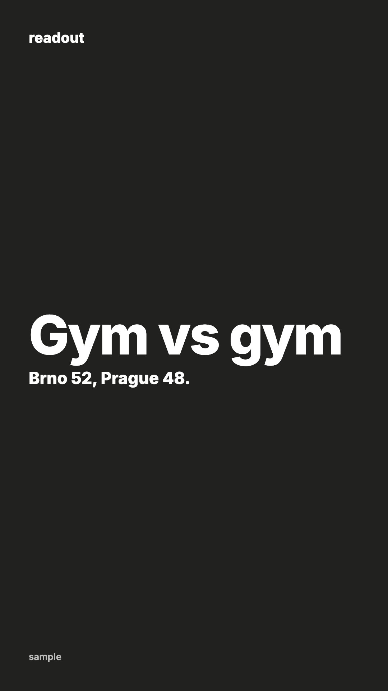

Direction 5, ours, built on the Strava copy
Lift alone, count together.
Everyone trains alone. The sensor makes the gym a team.
Round two: our version, made with the strava-design skill from the copy. Kept: the feed of activity cards, the stat blocks, heavy numbers over black-and-white photos, the plain voice. Made ours: the colour, the name and the word for kudos.
The story
Headphones in, nobody knows anybody, every workout happens on its own. Strava turned solo runs into a community with kudos, clubs and challenges. The sensor sees every set on every machine, so the gym finally has a shared number: this week’s total, gym against gym.
The enemyTraining alone, unseen.
The promiseEvery set counts twice. Once for you, once for your gym.
The brand kit
20 kg blue#1F5BD8
Ink#21211F
Grey#43423F
Stone#64635E
Light#F3F2EF
White#FFFFFF
Type: Strava’s Boathouse for everything. Stand-in here: Inter, bold for numbers, the name heavy and upright in lowercase. Photography: real people training, black and white, numbers in 20 kg blue on top. Voice: plain, encouraging, a little cheeky. “A no BS leaderboard.”

Posts and stories





